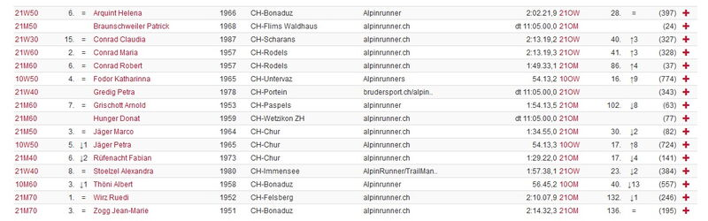

Alpinrunner
Bündner Frühlingslauf
Samstag 09. April Bündner Frühlingslauf von Thusis nach Reichenau 21.2 Km
Alpinrunner am Start: Startliste such nach alpinrunner / Gesamtrangliste Datasport
zur Website mit Streckenbeschrieb
Bei kühlen Temperaturen ging es los in Thusis zum Halbmarathon und Rothenbrunnen zum 10 Km Lauf. Auf der Startliste standen 16 Apinrunner/innen. Im Ziel in Reichenau trafen sich dann alle Läufer/innen bei Festlaune und grosser Freude, um wieder ohne Einschränkungen ein Läuferfest zu feiern. Eine super Veranstaltung, top organisiert mit vielen motivierten Helfern hatte es grossen Spass gemacht dabei zu sein. Herzlichen Dank an den TV-Tamins
